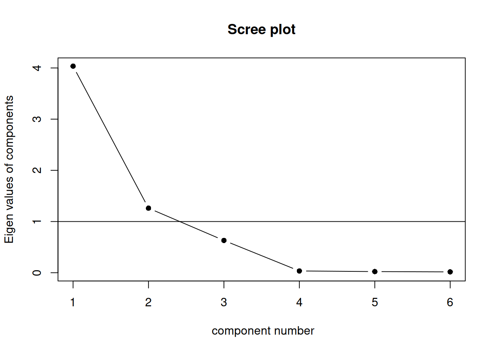

Principal Component Analysis (PCA)
Information about solutions
Solutions for these exercises are available immediately below each question.
We would like to emphasise that much evidence suggests that testing enhances learning, and we strongly encourage you to make a concerted attempt at answering each question before looking at the solutions. Immediately looking at the solutions and then copying the code into your work will lead to poorer learning.
We would also like to note that there are always many different ways to achieve the same thing in R, and the solutions provided are simply one approach.
Relevant packages
- psych
Thinking about measurement
Take a moment to think about the various constructs that you are often interested in as a researcher. This might be anything from personality traits, to language proficiency, social identity, anxiety etc. How we measure such constructs is a very important consideration for research. The things we’re interested in are very rarely the things we are directly measuring.
Consider how we might assess levels of anxiety or depression. Can we ever directly measure anxiety?.1 More often than not, we measure these things using questionnaire based methods, to capture the multiple dimensions of the thing we are trying to assess. Twenty questions all measuring different aspects of anxiety are (we hope) going to correlate with one another if they are capturing some commonality (the construct of “anxiety”). But they introduce a problem for us, which is how to deal with 20 variables that represent (in broad terms) the same thing. How can we assess “effects on anxiety,” rather than “effects on anxiety q1,” “effects on anxiety q2,” …, etc.
This leads us to the idea of reducing the dimensionality of our data. Can we capture a reasonable amount of the information from our 20 questions in a smaller number of variables?
The goal of principal component analysis (PCA) is to find a smaller number of uncorrelated variables which are linear combinations of the original ( many ) variables and explain most of the variation in the data.
Data: Job Performance
The file job_performance.csv (available at https://uoepsy.github.io/data/job_performance.csv) contains data on fifty police officers who were rated in six different categories as part of an HR procedure. The rated skills were:
- communication skills:
commun - problem solving:
probl_solv - logical ability:
logical - learning ability:
learn - physical ability:
physical - appearance:
appearance
Load the job performance data into R and call it job.
Check whether or not the data were read correctly into R - do the dimensions correspond to the description of the data above?
Provide descriptive statistics for each variable in the dataset.
Preliminaries
Is PCA needed?
If the original variables are highly correlated, it is possible to reduce the dimensionality of the problem under investigation without losing too much information.
On the other side, when the correlation between the variables under study is weak, a larger number of components is needed in order to explain sufficient variability.
Investigate whether or not the recorded variables are highly correlated and explain whether or not you PCA might be useful in this case.
Hint: We only have 6 variables here, but if we had many, how might you visualise cor(job)?

Cov vs Cor
Should we perform PCA on the covariance or the correlation matrix?
This depends on the variances of the variables in the dataset. If the variables have large differences in their variances, then the variables with the largest variances will tend to dominate the first few principal components.
A solution to this is to standardise the variables prior to computing the covariance matrix - i.e., compute the correlation matrix!
# show that the correlation matrix and the covariance matrix of the standardized variables are identical
all.equal(cor(job), cov(scale(job)))## [1] TRUELook at the variance of the variables in the data set. Do you think that PCA should be carried on the covariance matrix or the correlation matrix?
Perform PCA
Using the principal() function from the psych package, we can perform a PCA of the job performance data, Call the output job_pca.
job_pca <- principal(job, nfactors = ncol(job), covar = ..., rotate = 'none')
job_pca$loadingsDepending on your answer to the previous question, either set covar = TRUE or covar = FALSE within the principal() function.
Warning: the output of the function will be in terms of standardized variables nevertheless. So you will see output with standard deviation of 1.
The output
job_pca$loadings##
## Loadings:
## PC1 PC2 PC3 PC4 PC5 PC6
## commun 0.984 -0.120 0.101
## probl_solv 0.223 0.810 0.543
## logical 0.329 0.747 -0.578
## learn 0.987 -0.110 0.105
## physical 0.988 -0.110
## appearance 0.979 -0.125 0.161
##
## PC1 PC2 PC3 PC4 PC5 PC6
## SS loadings 4.035 1.261 0.631 0.035 0.022 0.016
## Proportion Var 0.673 0.210 0.105 0.006 0.004 0.003
## Cumulative Var 0.673 0.883 0.988 0.994 0.997 1.000The output is made up of two parts.
First, it shows the loading matrix. In each column of the loading matrix we find how much each of the measured variables contributes to the computed new axis/direction (that is, the principal component). Notice that there are as many principal components as variables.
The second part of the output displays the contribution of each component to the total variance.
Before interpreting it however, let’s focus on the last row of that output called “Cumulative Var.” This displays the cumulative sum of the variances of each principal component. Taken all together, the six principal components taken explain all of the total variance in the original data. In other words, the total variance of the principal components (the sum of their variances) is equal to the total variance in the original data (the sum of the variances of the variables).
However, our goal is to reduce the dimensionality of our data, so it comes natural to wonder which of the six principal components explain most of the variability, and which components instead do not contribute substantially to the total variance.
To that end, the second row “Proportion Var” displays the proportion of the total variance explained by each component, i.e. the variance of the principal component divided by the total variance.
The last row, as we saw, is the cumulative proportion of explained variance: 0.673, 0.673 + 0.210, 0.673 + 0.210 + 0.105, and so on.
We also notice that the first PC alone explains 67.3% of the total variability, while the first two components together explain almost 90% of the total variability. From the third component onwards, we do not see such a sharp increase in the proportion of explained variance, and the cumulative proportion slowly reaches the total ratio of 1 (or 100%).
How many components to keep?
There is no single best method to select the optimal number of components to keep, while discarding the remaining ones (which are then considered as noise components).
The following three heuristic rules are commonly used in the literature:
- The cumulative proportion of explained variance criterion
- Kaiser’s rule
- The scree plot
- Velicer’s Minimum Average Partial method
- Parallel analysis
In the next sections we will analyse each of them in turn.
The cumulative proportion of explained variance criterion
The rule suggests to keep as many principal components as needed in order to explain approximately 80-90% of the total variance.
Looking again at the PCA output, how many principal components would you keep if you were following the cumulative proportion of explained variance criterion?
Kaiser’s rule
According to Kaiser’s rule, we should keep the principal components having variance larger than 1. Standardized variables have a variance equal 1. Because we have 6 variables in the data set, and the total variance is 6, the value 1 represents the average variance in the data: \[ \frac{1 + 1 + 1 + 1 + 1 + 1}{6} = 1 \]
Hint:
The variances of each PC are shown in the row of the output named SS loadings and also in
job_pca$values. The average variance is:
mean(job_pca$values)## [1] 1Looking again at the PCA output, how many principal components would you keep if you were following Kaiser’s criterion?
The scree plot
The scree plot is a graphical criterion which involves plotting the variance for each principal component.
This can be easily done by calling plot on the variances, which are stored in job_pca$values
plot(x = 1:length(job_pca$values), y = job_pca$values,
type = 'b', xlab = '', ylab = 'Variance',
main = 'Police officers: scree plot', frame.plot = FALSE)
where the argument type = 'b' tells R that the plot should have both points and lines.
A typical scree plot features higher variances for the initial components and quickly drops to small variances where the curve is almost flat. The flat part of the curve represents the noise components, which are not able to capture the main sources of variability in the system.
According to the scree plot criterion, we should keep as many principal components as where the “elbow” in the plot occurs. By elbow we mean the variance before the curve looks almost flat.
Alternatively, some people prefer to use the function scree() from the psych package:
scree(job, factors = FALSE)
This also draws a horizontal line at y = 1. So, if you are making a decision about how many PCs to keep by looking at where the plot falls below the y = 1 line, you are basically following Kaiser’s rule. In fact, Kaiser’s criterion tells you to keep as many PCs as are those with a variance (= eigenvalue) greater than 1.
According to the scree plot, how many principal components would you retain?
Velicer’s Minimum Average Partial method
The Minimum Average Partial (MAP) test computes the partial correlation matrix (removing and adjusting for a component from the correlation matrix), sequentially partialling out each component. At each step, the partial correlations are squared and their average is computed.
At first, the components which are removed will be those that are most representative of the shared variance between 2+ variables, meaning that the “average squared partial correlation” will decrease. At some point in the process, the components being removed will begin represent variance that is specific to individual variables, meaning that the average squared partial correlation will increase.
The MAP method is to keep the number of components for which the average squared partial correlation is at the minimum.
We can conduct MAP in R using:
VSS(data, plot = FALSE, method="pc", n = ncol(data))(be aware there is a lot of other information in this output too! For now just focus on the map column)
How many components should we keep according to the MAP method?
Parallel analysis
Parallel analysis involves simulating lots of datasets of the same dimension but in which the variables are uncorrelated. For each of these simulations, a PCA is conducted on its correlation matrix, and the eigenvalues are extracted. We can then compare our eigenvalues from the PCA on our actual data to the average eigenvalues across these simulations. In theory, for uncorrelated variables, no components should explain more variance than any others, and eigenvalues should be equal to 1. In reality, variables are rarely truly uncorrelated, and so there will be slight variation in the magnitude of eigenvalues simply due to chance. The parallel analysis method suggests keeping those components for which the eigenvalues are greater than those from the simulations.
It can be conducted in R using:
fa.parallel(job, fa="pc", quant=.95)How many components should we keep according to parallel analysis?
Interpretation
Because three out of the five selection criteria introduced above suggest to keep 2 principal components, in the following we will work with the first two PCs only.
Let’s have a look at the selected principal components:
job_pca$loadings[, 1:2]## PC1 PC2
## commun 0.984 -0.1197
## probl_solv 0.223 0.8095
## logical 0.329 0.7466
## learn 0.987 -0.1097
## physical 0.988 -0.0784
## appearance 0.979 -0.1253and at their corresponding proportion of total variance explained:
job_pca$values / sum(job_pca$values)## [1] 0.67253 0.21016 0.10510 0.00577 0.00372 0.00273We see that the first PC accounts for 67.3% of the total variability. All loadings seem to have the same magnitude apart from probl_solv and logical which are closer to zero.
The first component looks like a sort of average of the officers performance scores excluding problem solving and logical ability.
The second principal component, which explains only 21% of the total variance, has two loadings clearly distant from zero: the ones associated to problem solving and logical ability. It distinguishes police officers with strong logical and problem solving skills and a low score on the test (note the negative magnitude) from the other officers.
We have just seen how to interpret the first components by looking at the magnitude and sign of the coefficients for each measured variable.
For interpretation purposes, it might help hiding very small loadings. This can be done by specifying the cutoff value in the print() function. However, this only works when you pass the loadings for all the PCs:
print(job_pca$loadings, cutoff = 0.3)##
## Loadings:
## PC1 PC2 PC3 PC4 PC5 PC6
## commun 0.984
## probl_solv 0.810 0.543
## logical 0.329 0.747 -0.578
## learn 0.987
## physical 0.988
## appearance 0.979
##
## PC1 PC2 PC3 PC4 PC5 PC6
## SS loadings 4.035 1.261 0.631 0.035 0.022 0.016
## Proportion Var 0.673 0.210 0.105 0.006 0.004 0.003
## Cumulative Var 0.673 0.883 0.988 0.994 0.997 1.000
{kind=link}
PCA scores
Supposing that we decide to reduce our six variables down to two principal components:
job_pca2 <- principal(job, nfactors = 2, covar = TRUE, rotate = 'none')We can, for each of our observations, get their scores on each of our components.
head(job_pca2$scores)## PC1 PC2
## [1,] -6.10 -1.796
## [2,] -4.69 4.164
## [3,] -5.18 -0.131
## [4,] -4.31 -1.758
## [5,] -3.71 1.207
## [6,] -3.88 -5.200In the literature, some authors also suggest to look at the correlation between each principal component and the measured variables:
# First PC
cor(job_pca2$scores[,1], job)## commun probl_solv logical learn physical appearance
## [1,] 0.985 0.214 0.319 0.988 0.989 0.981The first PC is strongly correlated with all the measured variables except probl_solv and logical.
As we mentioned above, all variables seem to contributed to the first PC.
# Second PC
cor(job_pca2$scores[,2], job)## commun probl_solv logical learn physical appearance
## [1,] -0.163 0.792 0.738 -0.154 -0.122 -0.169The second PC is strongly correlated with probl_solv and logical, and slightly negatively correlated with the remaining variables. This separates police offices with clear logical and problem solving skills and a small score on the test (negative sign) from the others.
We have reduced our six variables down to two principal components, and we are now able to use the scores on each component in a subsequent analysis!
For instance, if we also had information on how many arrests each police officer made, and the HR department were interested in whether the 6 questions we started with are a good predictor of this.
We could imagine conducting an analysis like the below:
# add the PCA scores to the dataset
job <-
job %>% mutate(
skills_score1 = job_pca2$scores[,1],
skills_score2 = job_pca2$scores[,2]
)
# use the scores in an analysis
lm(nr_arrests ~ skills_score1 + skills_score2, data = job)Plotting the retained principal components
We can also visualise the statistical units (police officers) in the reduced space given by the retained principal component scores.
tibble(pc1 = job_pca$scores[, 1],
pc2 = job_pca$scores[, 2]) %>%
ggplot(.,aes(x=pc1,y=pc2))+
geom_point()
Even if we cut open someone’s brain, it’s unclear what we would be looking for in order to ‘measure’ it. It is unclear whether anxiety even exists as a physical thing, or rather if it is simply the overarching concept we apply to a set of behaviours and feelings↩︎